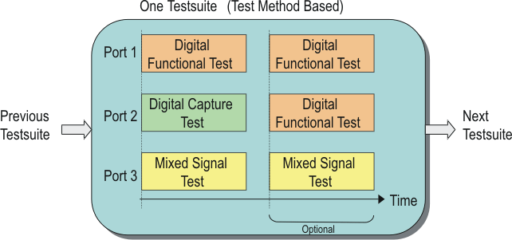

Test Method Programs for Multi-port Test
Multi-port testing can also be performed using the Test Method programs in the test suites.

The Test Method enables you to do the following in the multi-port testing:
- Execute a multi-port test where the digital capture function and analog modules can be used
in each port.
The multi-port test to be executed is specified by the start label in the Testsuite dialog window.
- Retrieve results of:
- Digital functional test in the specified port
- Digital capture in the specified pins in a port or across ports
- Analog waveform capture and TIA measurement in the specified pin or analog core
Process the capture/measurement data by the desired methodology using the user-defined C/C++ functions and the test method computation APIs.
- Judge pass/fail for each test result in each port and log them. If all the judgments in a
test suite are pass, the test suite is handled as pass in the testflow.
You can assign a fail bin (or software bad bin) for each port or each per-port test result by sending the per-port judgment results from the test method program to the testflow via the user-defined testflow variables (assign a bin according to the testflow variable values in the testflow).
- Change the hardware settings before executing the multi-port test.
All of the multi-port unique settings shown below can be changed in addition to the other primaries and the individual analog/routing hardware settings.
- Primary specification
- Per-port spec values in the primary or specified specification
- Per-port primary timing set
- Multi-port burst label (as start label)